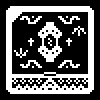

/HEXA/LUNA
Psalter de Luna
TRANSCRIBED DIALOGUE BETWEEN OMИI AND KOILWOOD
4/19/2023

KOILWOOD It was first thought that the moon caused madness and insanity, hence the term lunatic, I find this particularly interesting as we blamed the moon for our madness and not the absence of the sun.
OMИI Perhaps it has to do with the moonlight acting as a cold sun against the darkness, we fear the incubator of a realm that is not ours.
KOILWOOD Our shadows hail to the moon in midnight and spin within the howling winds of freedom. The moon be what guides us as a beaming compass in the night.
OMИI Eternal observer casting shifting dim light as a stage for the dance of dreams and shadows. The radiance of the sun punishes those who dare gaze upon it, but the moon allows those to gaze upon it's divine flesh. Lunacy is the name given to those who become enveloped in Luna's astral beauty, unable to return their minds from the celestial, unable to return their sight from the incubator of dreams.
KOILWOOD Our muted monarch, stretching the arms of purity to pull the strings of our veil and inhale the breathe of our shadows.
OMИI Silent guardian, willing delicate waters to extinguish the blazes of ignorance and guide curious souls along the starlit stream. For when gates close around the golden rings, the timeless angel will hold the hands of shadows through the cosmic dance.
KOILWOOD And we trail along this whitened path as crows through the mist, bleeding into the holy night beside our moon mothers redeeming organ our shadow - hiding in the womb of the mother in white, blends with the cloth of the aether and twists behind the thin veil of eternity.
OMИI The phantom seamstress, shaping the infinite duvet to nurture our wandering psyche.
KOILWOOD For why hath thy purging kingdom of the sun outcast the regressing form of shifting darkness and cripple the dark child evermore? The king steals our eyes of anguish and shines his wrathful light as a roar at dawn- O mother where be your wisdom in the dead of day?
OMИI Cast beneath smoke, the embers sinful attempt at crafting the dark mist of her embrace - only the blinding light shines through this false cloth as it suffocates the shadows; tearing into their plane. O mother where is your vision among the suns sharply cast lies?
KOILWOOD May your whispers be heard through the waking of my darkness - the black wing stretching beneath my skin of white. May we be the strings that pull within the compass of the night and taint the gentle face of her womb. Our sacrifice is the sin of our slithering intent and our blossoming be the clipping of our mask to the saint of the void. This is our fated night and this is the waltz beside the cypress path.
OMИI May the tides dance wash the ashes from my hands and eyes. May the endless becoming of all that I am be cast back with the resting flesh and to the tears of azure light. Serpentine doubt rips at the soul with it's fiery collar and draws the blind into the flames. I do not wish to be with the smokes celestial war, I wish to be cast with the mist of true rebirth. The chorus of the shadows gleam brighter in the holy night, the rhythm of the water rise higher under your watch - timeless mother.
KOILWOOD Oth o thær, may the light of the moon be with you